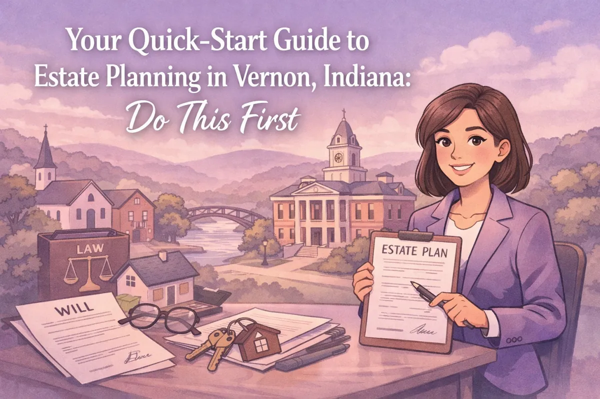
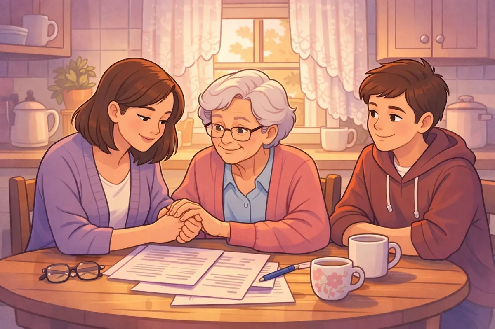

Your Quick-Start Guide to Estate Planning in Vernon, Indiana: Do This First

Let's talk about something most folks in Vernon don't want to think about: estate planning.
I get it. It feels morbid. You're busy. You figure you'll get around to it later.
But here's the thing, estate planning isn't just about what happens after you're gone. It's about protecting yourself and your family right now. It's about making sure the people you love don't have to guess what you would have wanted. And honestly? It's about giving yourself some peace of mind.
Vernon might be a small town in Jennings County (pretty much surrounded by North Vernon), but that doesn't mean life is simple. People here own homes, run businesses, raise kids, and build lives worth protecting. Estate planning is how you make sure all of that stays secure, no matter what happens.
Let me walk you through the basics so you know exactly where to start.
Why Estate Planning Actually Matters (Even If You Think You're Too Young)
A lot of people think estate planning is only for wealthy folks or people nearing retirement. That's not true.
If you own anything, a house, a car, a bank account, you need a plan. If you have kids, you definitely need a plan. If you want to make sure someone you trust can make medical or financial decisions for you if you can't, you need a plan.
Without one, Indiana law decides what happens to your stuff and who takes care of your kids. And trust me, the state doesn't know you like you know yourself.

The Big Three: What You Actually Need
Estate planning can feel overwhelming because there are so many options out there. Trusts, beneficiaries, probate avoidance strategies, it's a lot.
But if you're just getting started, focus on these three things first:
1. A Will. Your will is the foundation of your estate plan. It's the document that says who gets what when you're gone.
In Indiana, if you die without a will, your assets get divided according to state law. That might sound fine, but it doesn't account for your specific situation. Maybe you want your sister to have your grandmother's ring. Maybe you want to leave money to a charity. Maybe you have a blended family and want to make sure everyone is taken care of fairly.
A will lets you make those calls. It also lets you name who you want as guardian for your kids if they're still minors. That's huge.
Your will needs to comply with Indiana law to be valid, which means it needs to be signed, witnessed, and done correctly. This isn't something you want to DIY with a form you found online.
2. Financial Power of Attorney. Here's a question: if you got hurt tomorrow and couldn't manage your bank accounts or pay your bills, who would handle it?
A financial power of attorney names someone you trust to make financial decisions on your behalf if you become incapacitated. This person can pay your mortgage, access your accounts, file your taxes, whatever needs to happen to keep your financial life running.
Without this document, your family might have to go to court to get permission to help you. That takes time and money, and it adds stress when people are already worried about your health.
3. Healthcare Directive (Healthcare Power of Attorney). This one's just as important as the financial power of attorney, but it's about medical decisions instead of money.
A healthcare directive (sometimes called an advance healthcare directive or living will) tells doctors and your loved ones what kind of medical treatment you want if you can't speak for yourself. It also names a healthcare agent, someone who can make medical decisions on your behalf.
Do you want to be kept on life support if there's no chance of recovery? What about organ donation? These are tough questions, but answering them now means your family won't have to guess later.
Indiana law requires that your healthcare directive reflect your current wishes, so it's worth reviewing every few years to make sure it still matches how you feel.
Your Quick-Start Checklist
Alright, so now you know what you need. Here's how to actually get it done:
Step 1: Choose Your People. Think about who you trust to carry out your wishes. You'll need to pick:
An executor (the person who administers your will and handles your estate)
A financial agent (for your financial power of attorney)
A healthcare agent (for your healthcare directive)
A guardian for your kids, if they're minors
These can be the same person or different people, depending on your situation. Just make sure whoever you choose is willing, capable, and trustworthy. Under Indiana law, your executor needs to be of sound mind and can't have a felony conviction.
Step 2: Take Stock of What You Own. Make a list of your assets. This includes:
Your home and any other real estate
Bank accounts and investments
Retirement accounts and life insurance
Vehicles
Personal property (jewelry, family heirlooms, etc.)
Some of these assets, like life insurance and retirement accounts, let you name beneficiaries directly. Those designations override your will, so make sure they're up to date.
Step 3: Get Your Documents in Order. Once you've made your decisions, it's time to create the actual legal documents. This is where working with an attorney really helps.
Yes, there are DIY options out there. But here's the reality: if your documents aren't done correctly, they might not hold up when it matters most. Indiana has specific requirements for wills, powers of attorney, and healthcare directives. A local attorney who knows the law can make sure everything is legally valid and actually works the way you intend.
Step 4: Store Everything Safely (and Tell People Where It Is). Once your documents are signed and ready, put them somewhere safe. A fireproof safe at home or a safe deposit box works. Just make sure your executor and agents know where to find them.
Also, give copies to the people who need them: your healthcare agent should have a copy of your healthcare directive, for example.
What About Trusts?
You might have heard about trusts and wondered if you need one.
Trusts can be useful tools, especially if you have a lot of assets, want to avoid probate, or have specific goals like protecting assets for your kids or grandkids. But they're not necessary for everyone.
For most folks in Vernon and Jennings County, starting with a solid will and powers of attorney is the right move. You can always add a trust later if your situation changes.
Don't Put This Off
I know estate planning isn't fun. It's not something you wake up excited to do. But putting it off doesn't make it go away: it just leaves your family to deal with the mess later.
The good news? Once it's done, it's done. You'll have peace of mind knowing your wishes are documented and your loved ones are protected. And if your circumstances change: you have another kid, get divorced, buy a house: you can update your plan.
Getting started is the hardest part. But if you're in Vernon, Jennings County, or anywhere nearby (North Vernon, Commiskey, Hayden, Scipio), you don't have to figure this out alone.
Let's Make a Plan
Estate planning doesn't have to be complicated or expensive. It just needs to get done.
If you've been putting this off, now's the time to take action. Let's sit down, talk through your situation, and create a plan that actually works for you and your family.
I'm Chris Doran, and I work with folks right here in Vernon to solve their legal needs: including estate planning. I listen to what you have to say, give you options, and help you make decisions that make sense for your life.
Ready to get started? Let's talk. Your family will thank you for it.